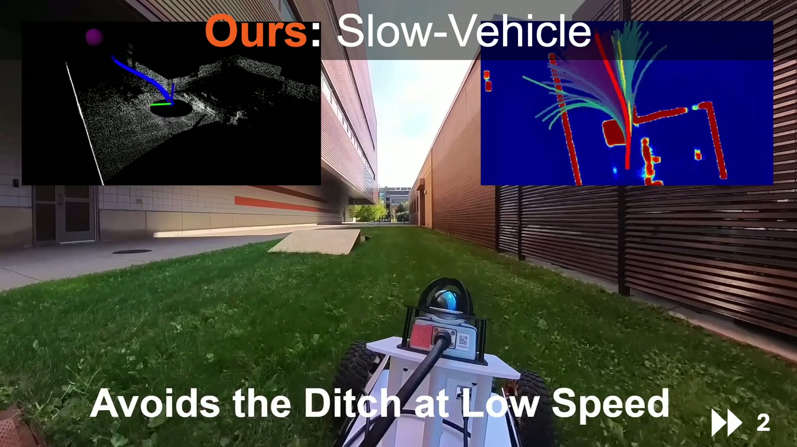
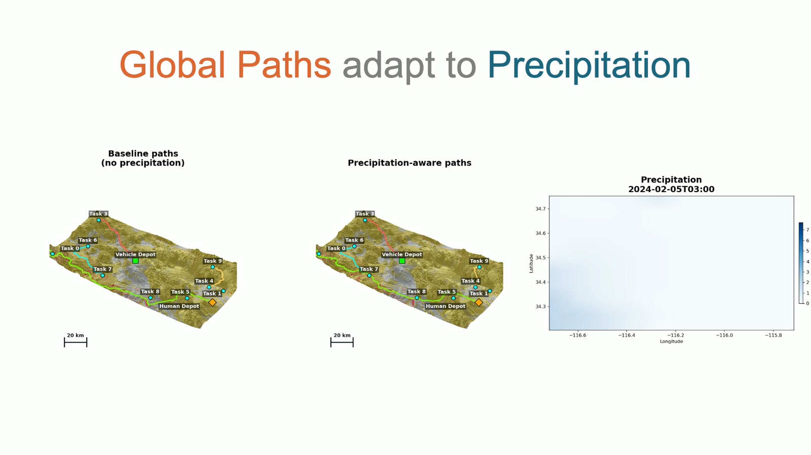

Research overview
Abstract
The vehicle module studies adaptive terrain traversal strategies. The supplied video contrasts a baseline that avoids obstacles with a mobility-aware approach whose decisions change with vehicle speed and obstacle characteristics. Simulated terrain and real-world ditch demonstrations illustrate local navigation behavior, followed by a global planning example in which routes adapt to precipitation.
Research problem
Classifying every terrain discontinuity as an obstacle can produce unnecessary detours. Conversely, treating every obstacle as traversable can produce infeasible routes. The GRAPPLE introduction names this module the Neuro-Symbolic Vehicle Model and places it within physics-informed AI for human and vehicle traversal.
The demonstration focuses on the resulting behavior: choosing when a vehicle can traverse an obstacle, when it must avoid one, and how those choices change with speed. The supplied video does not specify the network architecture, symbolic rule set, or training protocol. [1; 2, slides 2–3]
Adaptive terrain traversal
Simulation examples include ditches and rocks, an uphill ditch, bumps, flat bedrock, and canyon and desert terrain. A baseline segment is labeled “Always Avoids Regardless of the Speed.” The proposed approach demonstrates alternative traversal behavior in these environments.
These examples distinguish mobility-dependent obstacles from obstacles that remain untraversable. Later footage explicitly shows continued avoidance of a tree. [1, 1:00–2:00; 3:45–4:00]
Real-world demonstrations
The video includes a manmade ditch and fence setting and a natural snow ditch setting. In the manmade setting, the baseline avoids the obstacle. The proposed approach is shown in subsequent runs, including a slow-vehicle condition explicitly labeled as avoiding the ditch at low speed.
The comparison illustrates why speed must be part of a traversal decision: an obstacle that can be negotiated under one motion condition may require avoidance under another. The footage demonstrates qualitative behavior; it does not provide a full trial count or success-rate table. [1, 2:00–3:45]
Global paths and precipitation
The final planning example compares baseline paths without precipitation against precipitation-aware paths. Human and vehicle depots and multiple tasks appear on the map, linking local mobility considerations to mission-scale route planning.
Within the GRAPPLE workflow, vehicle mobility informs agent-specific traversal costs for the environment representation. COA generation then uses the available route information to allocate and sequence tasks across the fleet. [1, 4:00–4:30]
Reported result and evidence scope
The introduction slide reports 75% less detour for the vehicle module. The supplied introduction and video do not give the full benchmark definition, aggregation procedure, or evaluation sample behind that figure. It is therefore presented as a project-reported overview result, alongside the qualitative demonstrations, rather than as a general guarantee.
The field footage supports the distinction between speed-dependent traversal and persistent obstacle avoidance. The precipitation map is a separate global-planning demonstration. [1; 2, slide 3]
Research figures


Module demonstration
Full supplied presentation · 4:42. Chapter links open the video at the indicated point. The written sections above provide a companion description of the methods and demonstrations.
Sources and research context
- Vehicle_video.mp4. Supplied GRAPPLE module presentation. Figures reproduced from the video; chapter times are approximate.
- ONR introduction slides. Program, research challenge, four-module workflow, and team; slides 1–4.
Results on this page are attributed to the supplied presentations. The materials do not include full benchmark protocols or bibliographic records for every component.

{kind=link}
{kind=link}